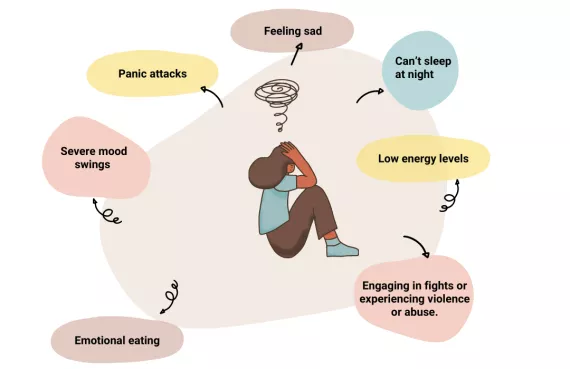
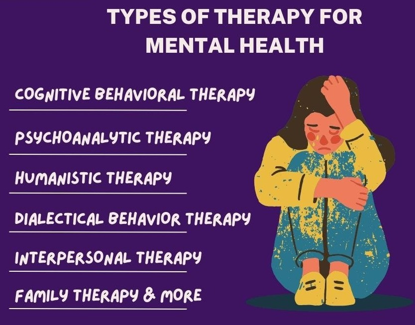
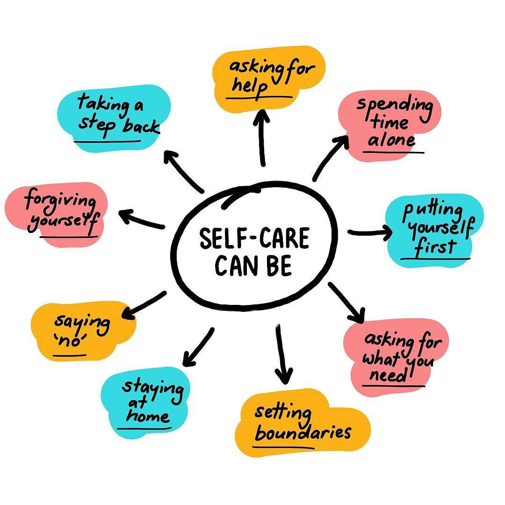
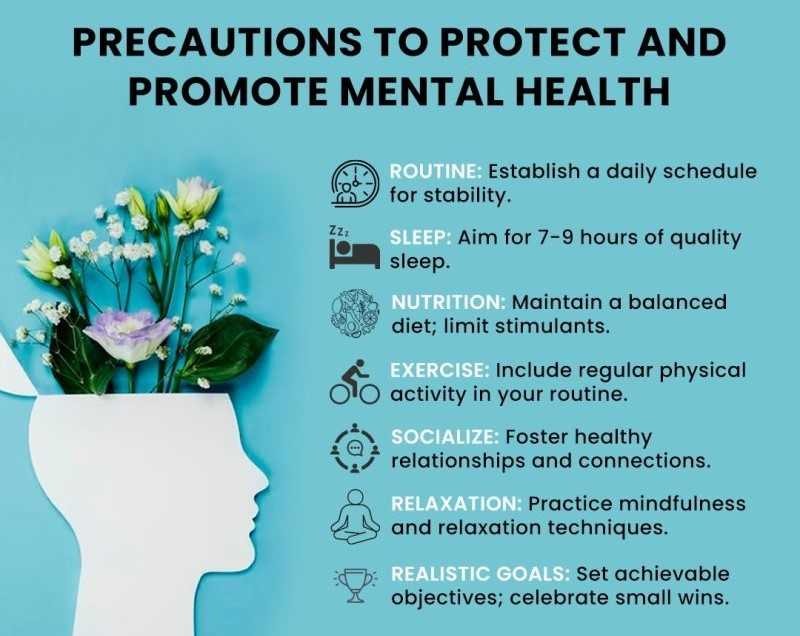

Telemedicine - Mental Health
Understanding Mental Health
Mental health refers to emotional, psychological, and social well-being. It affects how we think, feel, and act. Common mental health conditions include anxiety disorders, depression, bipolar disorder, and schizophrenia.
Signs and Symptoms
Signs and symptoms of mental health conditions vary but may include persistent sadness, anxiety, irritability, changes in sleep or appetite, and difficulty concentrating. It's essential to recognize these signs and seek help when needed.
Importance of Seeking Help

Seeking professional help is crucial for managing mental health conditions. Telemedicine provides convenient access to mental health professionals, allowing individuals to receive support and treatment from the comfort of their homes.
Types of Treatment
Treatment for mental health conditions may include therapy (such as cognitive-behavioral therapy), medication, lifestyle changes, and support groups. Telemedicine platforms offer various treatment options, making it easier for individuals to access the care they need.
Self-Care Strategies
Self-care plays a crucial role in maintaining good mental health. Strategies like stress management techniques, mindfulness exercises, regular exercise, healthy eating, and nurturing social connections can improve overall well-being.
Precautions
Please note the following precautions:
- Confidentiality: Ensure that all discussions and personal information shared during telemedicine consultations are kept confidential.
- Emergency Protocol: In case of a mental health emergency, contact emergency hotlines immediately for assistance.
- Professional Credentials: Verify that healthcare providers offering mental health services are licensed and qualified.
- Informed Consent: Obtain informed consent from users before engaging in telemedicine consultations.
- Follow-up Care: Encourage users to schedule follow-up appointments for ongoing support and monitoring.